С 6-го по 9-е августа 1998 года в Норвежском городе Нотодден прошел блюзовый фестиваль, на котором мне посчастливилось побывать. Фестиваль этот - один из самых известных в Европе, во многом благодаря звездному составу участников, сформировавшемуся за 11 лет существования фестиваля. В этом тексте я попробую рассказать поподробней о фестивале и изложить на бумаге некоторые полученные мною впечатления.
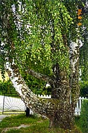
Город Нотодден - совсем небольшой, по моим оценкам там живет от 3-х до 5-ти тысяч человек, пройти пешком его можно минут за пятнадцать. Как и большая часть остальной Норвегии, город расположен в невысоких горах, состоящих исключительно из одного камня, сплошь покрытых соснами и родными березками. Ну и, естественно, на берегу собственного озера, в которое впадает стекающая с гор река, которую перекрывает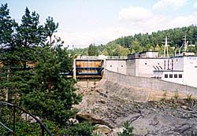
Myrens Dam - чудо инженерной мысли - дамба. Сооружение, которое само по себе поражает воображение, - нечто относительно грандиозное - бетонные, металлические и деревянные конструкции вперемешку с исконной природой. Прилегающие каналы и водные протоки, как и все дороги в Норвегии, прорублены в камне. Эдакое весьма органичное сочетание природы и человеческого творения. По общему духу ландшафт очень напоминает картинки из старой доброй компьютерной игры Myst. Скорей всего - просто прототип.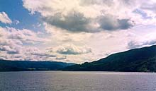
В городе, как я понял, кроме фестиваля обычно ничего не происходит, город - маленький. Тем более удивительно, что там образовалось нечто вроде блюзового культурного центра. Филиал EBS - Европейского Блюзового Сообщества. Помимо фестиваля это выражается в том, что в городе есть блюзовая библиотека, большое количество концертных площадок блюзовой направленности и даже местная блюзовая газета! Планы на будущее у организаторов фестиваля - серьезные. На большой площадке на берегу озера, где во время фестиваля находилась главная сцена - Tent (временное крытое сооружение, представляющее собой огромную палатку), в этом году планируется построить большое трехэтажное здание, в которое переедет блюзовая библиотека и офис фестиваля. Там же будет специальный блюзовый концертный зал и своя студия звукозаписи. В общем, настоящие New Vasyuki, с одним лишь отличием, что происходит все не в прожектах, а в реальной действительности. Как и остальное у буржуев - "Сказано - сделано".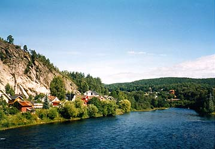
Концерты проходили на 10 разных площадках с утра до самого вечера. Послушав один концерт, смотришь в расписание и бежишь в другой конец города. Это не так страшно, так как бежать вовсе не обязательно - полчаса в запасе всегда есть, ну и "другой конец" совсем недалеко. Концерты совпадали по времени, главным образом, вечером, когда приходилось выбирать и разрываться на части. Днем скучать тоже не приходилось, все время где-то кто-то что-то играл. Большинство концертов - платные, кроме тех, что проходили на городской площади и были их своеобразной рекламой. Билеты стоили от 150 до 300 NOK (норвежских крон), что составляет примерно 20-40$. К тому же, не на все концерты можно было попасть, - билеты подчас были проданы. Меня это, слава Богу, не касалось, - я был счастливым обладателем голубой карточки с надписью Guest, с которой меня пускали практически всюду за так. Однако благодаря ей я был немного отягощен проблемой выбора и иногда убегал с одного концерта на другой, в отличие от норвежцев, купивших заранее билет, и без сомнений и заднего чувства оттягивавшихся от любой музыки, за которую заплачено. В результате я услышал не всех, кого хотел бы послушать. И это было и вправду трудно, так как всего за 4 дня сыграли 40 разных групп. Другим усложняющим дело обстоятельством было то, что я проводил по 14 часов в день на ногах, выпивая в процессе литра по два пива и поднимаясь два раза в день домой на 200 метров вверх в гору. К тому же страдал частичной потерей слуха после некоторых хороших концертов. Как результат, вечером я с трудом доползал до постели и мгновенно отключался. Погода на время фестиваля "исправилась" по норвежским понятиям - переменная облачность плюс во второй день покапал дождик. Как мне сообщил один местный житель, у них начиная с 27 мая, и вплоть до начала фестиваля, шел дождь. И все-таки, несмотря на эти "ужасные трудности", оттянулся я на славу и ни о чем не жалею ;).Теперь, наконец, о музыке. Пересказывать в точности, кто что играл - не буду, изложу только отдельные впечатления. Хочу сразу сказать, что мои оценки - дело личное, и они могут не совпадать с общим и чьим-то частным мнением. В одной вещи я убедился - можно услышать замечательную музыку в совершенно неожиданном месте и необязательно громкое имя гарантирует хорошую музыку. Некоторые маститые музыканты продолжают играть по инерции и в коммерческих интересах. Иные, не столь известные, находятся в фазе творческого расцвета и каждая сыгранная нота неслучайна, свежа и волнительна. Я ни коим образом не собираюсь делить музыкантов на эти две категории ;), надеюсь, никто не будет этого делать за меня. Просто, что-то меня впечатлило, что-то не очень.
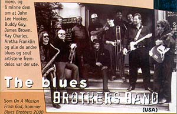
Группа The Blues Brothers Band выступала в составе неизменного инструментального оркестра из 10 музыкантов. Все те люди, которых мы видели в двух фильмах, к примеру, на гитарах - Matt "Guitar" Murphy и его белый собрат с хвостом и знакомым лицом - Steve Cropper. Вокал представлял всего один немного полный человек - Tommy McDonald, он хорошо пел, но не так хорошо танцевал. В фильмах мы его раньше не видели. Играли стандартные blues-brothers песни, инструментальная группа начала с традиционного инструментального 10-минутного разогрева публики. В общем, - весело, но в кино было интересней и зрелищней. Фотографировать никому в этот день не разрешили. К тому же я не дослушал до конца, так как падал от усталости. Другая забавная подробность - перед концертом в публике расхаживало около 5 разных человек в черных костюмах, шляпах, очках и ботинках. На мгновение я даже был сбит с толку, ну а потом я таких людей встречал в больших количествах в городе, - оказалось, что это преданные фанаты Blues Brothers. Как и на других больших концертах, в тот вечер играло две группы. На разогреве был некто Vidar Busk и His True Believers, но об этом - потом.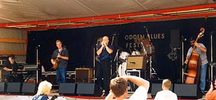
В один из первых дней на площади играл весьма известный гармонист Kim Wilson и его группа Kim Wilson Blues Express. В черных брюках и синей рубашке, коротко обритый, он чем-то очень напоминал мне Брюса Уиллиса ;). Играл действительно очень хорошо, правда, недолго. Группа Blues Express с гитаристом с белым коком и в больших очках (a-la Bill Haley, если не ошибаюсь) играла нежесткий традиционный чикагский блюз. Вечером того же дня Kim Wilson и суровый пианист из его группы с большой бородой и в кожаной шляпе присоединились к группе The Fabulous Thunderbirds. Я почему-то ожидал увидеть Jimmy Vaughan вместе с фениксами, но жестоко просчитался.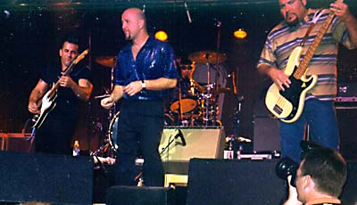
Мускулистый гитарист в углу фотографии на афише лишь был похож на него, а упоминание JV в норвежском тексте о группе, вероятно, было в том же смысле, что и в этом абзаце. Главным сходством двух гитаристов была стандартная для группы прическа. Играли они "с чувством" забойный блюзо-рок-н-ролл. Все было очень громко, поэтому Kim'у Wilson'у приходилось дудеть все время, как если бы ему нужно было надуть резиновую лодку. В общем, образовалась некоторая каша из сильно примоченной гитары, гармошки и остальных инструментов. Сразу возникла тоска по чистому гитарному звуку, в котором слышно отдельные ноты и музыку в целом. Сразу подумалось о том, какая вредная вещь - гитарные примочки. В блюзе позволительно играть изо всех сил и шуметь на гитаре в определенных местах блюзового квадрата в качестве одного из способов эмоционального выражения. Но если это делается все время на протяжении всей песни, то полностью теряет свой смысл. Ну, как если бы ты всегда говорил любимой девушке одну и ту же фразу: "Я тебя очень люблю", не разбавляя это другими словами и подробностями о том, как ты ее любишь. Она бы, в конце концов, тебе не поверила. ;). Что касается Kim Wilson, то у меня создалось впечатление, что он играет в Fabulous Thunderbirds по привычке и ради денег, а для удовлетворения творческих амбиций он собрал свой Blues Express. Все-таки стоит сказать, что, на самом деле, хорошая группа - Fabulous Thunderbirds, может очень понравиться в соответствующем настроении. Она мне не то что бы не понравилась, но скорей особенно не впечатлила.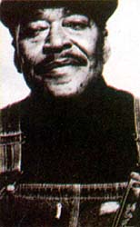
В театре города Нотодден выступал James Cotton. Приятные впечатления начались для меня с того, что я впервые за три дня сел в удобное мягкое кресло. Было не такое уж огромное количество публики, хорошо видно и слышно. Концерт начался с сольного выступления пианиста из группы Cotton'а. Помимо блюзовой карьеры, он является одним из лучших исполнителей буги-вуги на фортепиано. В этом году даже победил на соответствующем всеамериканском конкурсе. Играл он действительно круто и очень быстро. Пальцы мелькали так, что их порой не было видно - весьма сильное впечатление. Потом к нему присоединился черный гитарист с красным полуаккустическим Hohner'ом. Играл отлично - великолепные, иногда быстрые, разборчивые соло, а иногда - "качающие" ритм-партии из шаффлов с нетривиальными аккордовыми заполнениями. Они с пианистом в дальнейшем обеспечивали ритм-секцию для всей группы. Никаких ударных и баса. После вышел, наконец, Cotton и другой одновозрастной с ним, пожилой вокалист. У Cotton'а, как многие знают, практически нет голоса, и сейчас он уже петь, наверное, сам не может. По крайней мере, говорит он с трудом, очень хриплым голосом. Играл поначалу Cotton немного неуверенно, не так бодро, как сыграл бы иной молодой гармонист. Зато через некоторое время, хорошо почувствовав (отличную!) "ритм-секцию", заиграл и разошелся не на шутку. Тут стало очень хорошо понятно, что такое высококлассный музыкант. При всем при этом, хочется отметить, что сам по себе великий музыкант многого сделать не может. Прекрасный результат получается, только когда известный исполнитель собирает по-настоящему классных музыкантов в свою группу.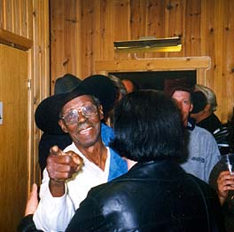
Великий пианист Pinetop Perkins, которому уже за 85, выступал с группой гитариста Bob Margolin (он же Steady Rollin' Bob Morgolin). Несмотря на свой возраст, Perkins по-прежнему играет великолепно, свежо и музыкально. Вполне можно сказать, что Pinetop Perkins находится в расцвете творческих сил. Поет тоже хорошо, ну и сам - весьма симпатичный человек. Одним словом - очень мне понравился. Морголин сыграл по отдельности несколько блюзов из стандартного репертуара Мадди Уотерса довольно точно и узнаваемо, с точки зрения гитарной партии, - все-таки сам был в молодости гитаристом MW.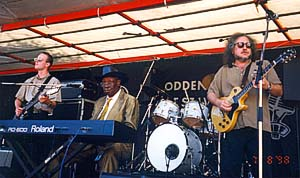
В группе Морголина бас-гитарист и гармонист по совместительству - подающий надежды молодой человек, - на обоих инструментах играет весьма неплохо. Когда играет на гармошке, Морголин подменяет ритм-секцию на своей гитаре. Один раз он даже сыграл на басу, но не очень убедительно, пока его напарник чинил микрофон.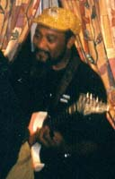
Еще один забавный человек - Super Chikan, на русский язык это, наверное, переводится, как СУПЕР-КУРИЦА. Настоящий черный миссиссипский блюзмен, в миру - James Johnson. Недавно получил Хэнди в качестве лучшего нового блюзового артиста. Имидж его, естественно, связан с куриной темой. Любимая песня - Little Red Rooster, иногда он вполне натурально кукарекает, а главное, в игре на гитаре явно слышно кудахтанье. Уверен, что его прозвище - следствие его куриных гитарных интонаций, а не наоборот. Самую забавную его песню - полу-блюз я услышал потом в исполнении Zydeco-группы. Слова там примерно такие: "Sittin' in the Ya-Ya, Waiting for my Ya-Ya, Uhoom, Uhoom.". Других, кажется, нет.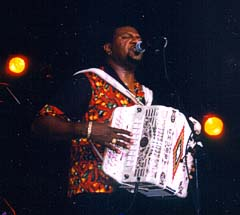
С большим интересом я ожидал обещанного концерта C.J.Chenier & Red Hot Lousiana Band. Вместо Chenier с его группой приехал некто Chubby Carrier, но в целом это обстоятельство нисколько меня не разочаровало. Мне довелось послушать целых два концерта, оба были просто замечательные. Это было наполовину настоящее Zydeco - чрезвычайно бодрая музыка, остальную половину песен скорей можно отнести к фанку, а что-то было вполне блюзовым. Chubby Carrier, в отличие от Chenier, играл на электро-баяне, а не на аккордеоне. С ними была духовая секция, крутой гитарист, перкуссия со стиральной доской, и главное, -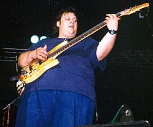
бас-гитарист - молодой и очень толстый человек с пяти-струнным басом. Как и полагается для хорошего фанка, отлично он на нем играл и слэпом, и по-всякому. Было очень весело, отличные музыканты раскачали зал, устроили настоящее шоу, равнодушных там не осталось. Тут еще мне вспоминается концерт James Brown в Москве. Несмотря на некоторое предубеждение к слову "фанк", которое у меня всегда было из-за не всегда приятного примешивания фанка к блюзу, оба концерта мне чрезвычайно понравились. Это благодаря тому, что James Brown и C.J.Chenier собрали вокруг себя отличных музыкантов и устроили очень музыкальное шоу.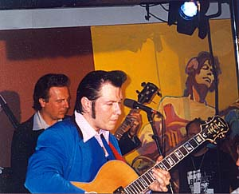
Самым большим открытием и, наверное, впечатлением на фестивале для меня была, как это ни странно, именно норвежская группа. Когда я пришел на Blues Bros, оказалось, что перед ними будет еще кто-то играть. На сцену вышел человек с Epiphone - полуаккустической archtop-гитарой, одетый под рокабила, с коком на голове и в пиджаке с блестками. Я как раз общался с норвежским молодым гитаристом из числа публики, с которым только познакомился и который очень любил SRV. Он был в курсе всех событий, поэтому я его спросил про человека на сцене - "Наверное, этот любит Элвиса Пресли?". Он мне сказал, что да - любит, и если ты его еще не слышал, это будет настоящим сюрпризом. Так оно, в общем-то, и оказалось. Это был норвежец Vidar Busk (читается как "Бюск", а не "Баск"), с ним группа His True Believers из трех человек - гармоника, контрабас и ударные. На этом большом концерте к ним присоединилась духовая секция по типу Roomful Of Blues и известный норвежский клавишник с косами. К Элвису Пресли то, что они играли, особого отношения не имело, разве что некоторая особенность гитарного стиля Busk'а, он добавлял рокабильные бодрые приемы в блюзовые соло. Песни были очень разнородные, было много заводных шаффлов. Ритм-секция играла безупречно, качала ритм так, как я мало где слышал. Все это сопровождалось дудками. Один из номеров - песня Letter to My Girlfriend, исполненная Stevie Ray Vaughan с Roomful Of Blues, с популярного, недавно выпущенного альбома Live At Carnegie Hall.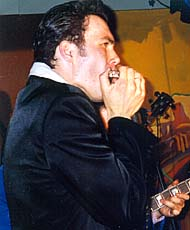
На гармонике играет 23-х летний Arne Rasmussen, про него говорят, что он из одной лиги с Kim Wilson и William Clarke, которому он иногда очень достойно подражает. Хороший пример - их композиция Groovy Gravy, очень похожая по аранжировке и звуку на кларковский инструментал Greasy Gravy, но являющаяся собственным сочинением гармониста. По звучанию они в паре с Vidar Busk почти обскакали гениальную чикагскую пару W.Clarke+Z.Zunis. О
самом Vidar Busk: ему сейчас около 27 лет, хорошо
выглядит, отлично поет. Идеальный кумир для
девушек. В юности с гитарой поехал в Америку
набираться опыта. Там нелегально остался на
полгода, научился английскому и набрался
гитарных идей на блюзовой малой родине. Потом его
поймали и выдворили обратно. Все эти перипетии
описаны в одной из песен и в комиксах на обложке
второго компакта. На гитаре Busk играет
действительно круто, меня эти вещи всегда по
некоторым причинам особо волновали. Слышит
музыку великолепно. Может играть по-разному - на
шаффл - умопомрачительные соло на полуаккустике.
При этом у него могут вылезать совершенно
неожиданные лады, одновременно очень
гармоничные. Блюз с завывающей гитарой на страте
играет так, будто у него гитара орет. При этом
может хорошо сыграть нечто в стиле SRV с
"брутальным" звуком. Но в отличие от Kenny Wayne Shepherd,
может и по-другому. Всю эту музыку он играет с
улыбкой, с отличными музыкальными шутками.
Нехитрая композиция Boogie Leg в концертном варианте
растянута минут на 10 с веселыми заездами в rockabilly,
blue-grass и пр. Есть смешные цитаты даже из би-бопа. В
общем, проэксплуатирую еще раз слово, скажу, что
Busk - очень "музыкальный". И, на мой взгляд, у него
все впереди. Вполне может стать звездой мировой
величины. По моим наблюдениям, он еще не
подвергся стандартной болезни молодых
музыкантов, - не зазнался, не ударился с головой
в пафос: тьфу: тьфу: тьфу:
О
самом Vidar Busk: ему сейчас около 27 лет, хорошо
выглядит, отлично поет. Идеальный кумир для
девушек. В юности с гитарой поехал в Америку
набираться опыта. Там нелегально остался на
полгода, научился английскому и набрался
гитарных идей на блюзовой малой родине. Потом его
поймали и выдворили обратно. Все эти перипетии
описаны в одной из песен и в комиксах на обложке
второго компакта. На гитаре Busk играет
действительно круто, меня эти вещи всегда по
некоторым причинам особо волновали. Слышит
музыку великолепно. Может играть по-разному - на
шаффл - умопомрачительные соло на полуаккустике.
При этом у него могут вылезать совершенно
неожиданные лады, одновременно очень
гармоничные. Блюз с завывающей гитарой на страте
играет так, будто у него гитара орет. При этом
может хорошо сыграть нечто в стиле SRV с
"брутальным" звуком. Но в отличие от Kenny Wayne Shepherd,
может и по-другому. Всю эту музыку он играет с
улыбкой, с отличными музыкальными шутками.
Нехитрая композиция Boogie Leg в концертном варианте
растянута минут на 10 с веселыми заездами в rockabilly,
blue-grass и пр. Есть смешные цитаты даже из би-бопа. В
общем, проэксплуатирую еще раз слово, скажу, что
Busk - очень "музыкальный". И, на мой взгляд, у него
все впереди. Вполне может стать звездой мировой
величины. По моим наблюдениям, он еще не
подвергся стандартной болезни молодых
музыкантов, - не зазнался, не ударился с головой
в пафос: тьфу: тьфу: тьфу:
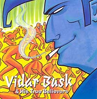 Что касается игры
Busk на гитаре, то есть там определенная
"студийная сдержанность", компенсированная
множеством других достоинств. Если посмотреть на
последовательность во времени - первый диск,
второй и последние концерты, видно, что Busk
развивается и прогрессирует в своих талантах
прямо сейчас. Первый диск более блюзово -
рок-н-ролльный, довольно монотонный, второй
содержит очень разные по стилю композиции.
"Кондовый" блюз на страте - Hard Times,
замечательная песня, напоминающая о T-Bone Walker -
Mr.Sugar, инструментал Groovy Gravy с яркой гармошкой
современно-чикагского стиля, рокабили I Came To Rock,
шаффл с дудками - Letter to My Girlfriend. Приятно
осознавать, что в музыке есть свежая молодая
струя, поглядим лет через пять. Ну, довольно про
одного человека, вернемся на фестиваль:.
Что касается игры
Busk на гитаре, то есть там определенная
"студийная сдержанность", компенсированная
множеством других достоинств. Если посмотреть на
последовательность во времени - первый диск,
второй и последние концерты, видно, что Busk
развивается и прогрессирует в своих талантах
прямо сейчас. Первый диск более блюзово -
рок-н-ролльный, довольно монотонный, второй
содержит очень разные по стилю композиции.
"Кондовый" блюз на страте - Hard Times,
замечательная песня, напоминающая о T-Bone Walker -
Mr.Sugar, инструментал Groovy Gravy с яркой гармошкой
современно-чикагского стиля, рокабили I Came To Rock,
шаффл с дудками - Letter to My Girlfriend. Приятно
осознавать, что в музыке есть свежая молодая
струя, поглядим лет через пять. Ну, довольно про
одного человека, вернемся на фестиваль:.
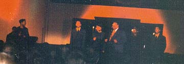
В церкви города Нотодден (лютеранской - несколько непривычной для меня по внутреннему убранству) прошел концерт The Myles Family. Это семейство, практически в полном составе, является одним из самых известных американских музыкальных коллективов, исполняющих госпел. Они все - глубоко верующие люди, и это выражается определенным образом в их стиле. Тексты песен иногда представляют собой просто церковные тексты, например, псалмы, или же носят богословский характер. Типичное название композиции - "I wanna dig a little dig in the storehouse of His love." Концерт отчасти представляет из себя проповедь. При этом, все это естественно отличается от наших с вами церковных песнопений очень открытой демонстрацией чувства, выраженной в замечательных интонациях негритянского вокала. С другой стороны, видно отличие от стиля soul, который в некотором роде тоже может являться духовным песнопением, но более приниженным и приближенным к народу и "сермяге". Одновременно с христианскими текстами, soul-исполнитель может петь песни про любовь откровенного содержания.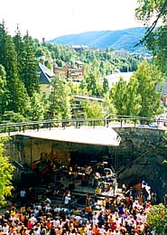
Завершился фестиваль замечательным концертом сборной американо-норвежской группы. Концерт проходил в живописном месте Myrens Dam - плотине. Норвегию представлял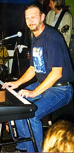
Reidar Larsen - длинный пианист лет 45 с бородой и очень хриплым голосом. Играл он замечательно в разных стилях. С ним группа из трех человек, из которой стоит особенно отметить гитариста. Половину песен он играл слайдом, немногословно, но очень точно, красиво и музыкально. Он мне напомнил об американце - слайдовом гитаристе Paul Black, выпустившем всего один, но потрясающий, диск на House Of Blues. Так и подмывает сравнить этих скромных гитаристов, играющих не очень большое количество нужных нот, с известными пафосными поливающими и шумными гитаристами. Первые - высококлассные музыканты, вторые - быстро надоедают. С американской стороны были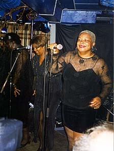
The Spirits Of Love Singers - группа из трех поющих женщин, прямо из Cotton Club, Harlem, New York. Трудно описать словами то, как мне понравился этот концерт. По стилю это была смесь блюза, соул и госпел со спиричуэлз. Духовные песни, которые обычно исполняются вокалом с сильным чувством, но, как правило, в рамках чисто мажорной гармонии, нетрадиционно сопровождались соло на слайдовой гитаре с блюзовыми нотами. Очень интересное и приятное на слух сочетание для любителей негритянской музыки. Остальные композиции тоже очень удачно сопровождались группой с Reidar Larsen и безымянным героем-гитаристом. Главная солистка - женщина лет 45-50, полная - почти big mama, но чрезвычайно живая и благодаря этому очень привлекательная дама.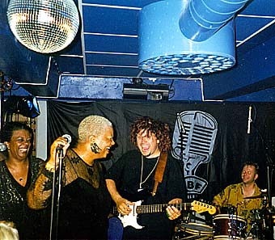
Для широкой публики концерт прошел днем, а вечером того же последнего дня я попал на закрытую вечеринку для работников фестиваля в уютный клуб Onkel Thornwald с двумя сценами на 2-м и 3-м этажах, там играли те же музыканты, но дольше и лучше. Героические работники фестиваля вкалывали 4 дня, пива не пили, музыку не слушали, зато в этот вечер оттянулись на славу. Вообще все на фестивале было организовано очень хорошо. Тысяч двадцать-тридцать человек слонялись по маленькому городу, пили пиво, ели и ходили в туалеты. Всего хватало. Было сыграно под сотню концертов, музыканты были всем обеспечены. Главная концертная площадка - Tent - гигантская палатка была быстро собрана и разобрана на следующее утро после последнего концерта. Начальники фестиваля, с которыми я имел честь пообщаться, вставали все эти дни в 6-7 утра, приходили домой в 3 ночи. Остается только сетовать на то, что в нашей стране такая организация практически невозможна.Теперь о тех, кого я не послушал, хотя мог. Полная программа фестиваля все еще лежит на официальном сайте фестиваля http://www.bluesfest.no. Во-первых, не смог приехать Johnny Winter, естественно из-за проблем со здоровьем. Его заменил Bo Diddley. Причем он играл ровно там и тогда, когда должен был играть Winter. Это связано с тем, что время всех концертов расписано заранее и продано некоторое количество билетов. Bo Diddley, увы, мне тоже не удалось послушать, так как пришлось выбирать между несколькими концертами, проходящими одновременно. По тем же причинам я пропустил концерты Marcia Ball, Buddy Miles Express (BM - тот самый, что играл с Хендриксом, блюзменами и джазменами) и некоторых других, не столь известных людей.
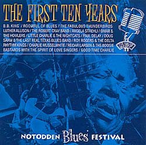
Ну и немного о тех музыкантах, которые раньше играли на NBF, но не приехали в этом году. О них я узнавал по надетым на норвежцев официальным майкам с прошлых фестивалей. Из широко известных блюзменов - это B.B.King, Robert Cray, покойный Luther Allison, Billy Boy Arnold, Roomful Of Blues, Charlie Musselwhite. Кого-то естественно упустил, но определенное представление этот список дать может. Состав играющих естественным образом увеличивается и меняется из года в год, фестиваль набирает известность. Многие приезжают уже в 5й - 6й раз. Прошлый фестиваль был десятым - юбилейным. По следам первых десяти был выпущен компакт "Notodden Blues Festival. The First Ten Years" - хорошая подборка блюзов, сыгранных в Нотоддене. Robert Cray, например, гарантировал себе место на этом CD уже тем, что вставил в песню куплет про Нотодден. За время фестиваля этот диск я выучил наизусть, так как он играл во всех питейных заведениях города. Кроме того, по Нотоддену разъезжал "официальный блюзмобиль фестиваля" - великолепный ретро-автомобиль, покрашенный в черный цвет и синий изнутри; задняя часть его представляла из себя две наклонные колонки, из которых почти всегда доносилась музыка с этого компакта. В результате активной рекламы, за время фестиваля было продано 5000 дисков, а это очень неплохая цифра. Кроме дисков, к фестивалю было подготовлено большое количество специальных предметов с символикой на продажу. Это те самые майки, в которых ходило буквально полгорода; зонты под норвежскую погоду, раскупленные в огромных количествах, когда пошел дождь во время концерта под открытым небом, кружки и проч.Теперь немного о том, как попасть на фестиваль, который для соотечественников является одним из самых близких по расстоянию и крупных по составу участников блюзовых фестивалей. Чтобы быть точным - самым близким из крупных и самым крупным из близких.
- ВИЗА. Норвежскую визу можно пробовать получить несколькими путями. 1) Через турагенство. В этом случае, турагенство должно забронировать и оплатить ваше проживание в отеле и купить вам билеты на самолет. В Москве есть несколько контор, способных через норвежского оператора бронировать гостиницы в маленьких городах. 2) Вы получаете приглашение от руководства фестиваля, в этом случае, они официально должны некоторым образом обеспечить вам место для жилья. Для журналистов процедура упрощается, т.к. они могут получить приглашение вместе с аккредитацией. При получении визы действует правило, при котором вы должны выехать из страны не менее чем за 3 месяца до окончания срока действия паспорта. Это незначительное обстоятельство чуть было мне не помешало.
- ДОРОГА. Сначала нужно долететь до Осло. Либо на самолете авиакомпании SAS с пересадкой в Копенгагене, билеты стоят около 550$. Либо на родном Аэрофлоте. Самые дешевые чартерные билеты стоят, по моим представлениям, от 300$ до 350$. Эти билеты нельзя сдать или поменять, заказывать их нужно недели за 3-4. Дальше очень просто - выходите из дверей аэропорта Форнебу в Осло, прямо через дорогу останавливается еже-получасовой автобус до Нотоддена. Тратите около $20 плюс два часа времени, и вы на месте.
- ЖИЛЬЕ. В Нотоддене есть несколько отелей, но на время фестиваля они все оказываются забитыми до отказа. Я думаю, вполне можно забронировать место в одном из отелей, если заняться этим делом месяца за три. Некоторые координаты отелей в Нотоддене есть на web-странице фестиваля http://www.bluesfest.no. Кроме того, на время фестиваля организуется несколько кемпингов, куда норвежцы приезжают на своих машинах и живут там в палатках. Закаленные меломаны вполне могут рассчитывать на этот вариант, т.к. фестиваль длится не очень долго - всего 4 дня. Единственное, о чем нужно будет позаботиться - это теплая одежда, защита от дождя, своя палатка и теплый спальный мешок.
- БИЛЕТЫ НА КОНЦЕРТЫ. Билеты на платные концерты стоят от 150 до 300 NOK, как я уже писал. Поэтому потратить на входные билеты можно максимум 250-350$. Единственная проблема в том, чтобы их купить. Для норвежцев все организовано очень просто - они могут купить билеты через стандартные службы распространения в ближайшем отделении связи. Где они продаются в розницу - я не видел, но это, наверное, можно легко узнать. Далеко не на всех концертах все билеты распроданы. Для журналистов при наличии аккредитации все, естественно, упрощается.
Описанные мною действия, которые нужно предпринять для поездки на NBF, могут показаться слишком сложными, однако у меня все получилось, несмотря даже на то, что я начал суетиться примерно за три-четыре недели до начала фестиваля. Стоит особо отметить, что дело облегчило очень хорошее отношение ко мне всех официальных лиц фестиваля. Дата следующего уже известна - 5-8 августа 1999-го года, и я уже снова собрался туда ехать. Может, на этот раз я окажусь не единственным представителем нашей замечательной Родины: